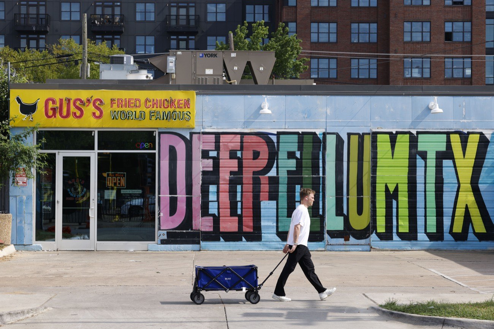

How pricing works
Pricing is based on home size, condition, and service level, with recurring plans typically costing less per visit than one-time resets.
Need dependable house cleaning in Deep Ellum without giving up your weekends? We help lofts, apartments, condos, and nearby homes stay ahead with recurring upkeep, deep resets, and move-day support.
Service guarantee: if we miss something in scope, tell us within 24 hours and we will make it right.
"Super reliable and easy to schedule." Read more reviews.
Pricing is based on home size, condition, and service level, with recurring plans typically costing less per visit than one-time resets.
Arrival windows are planned around Deep Ellum routes in and around Main Street, Elm Street, and nearby downtown blocks.
No. Most clients are away during the appointment and provide secure entry notes in advance.
| Service | Best For | Cadence |
|---|---|---|
| Recurring | Stable week-to-week upkeep | Weekly/Bi-weekly |
| Deep Clean | Stronger reset before hosting or after busy stretches | One-time or seasonal |
| Move Support | Turnovers, move-ins, move-outs | As needed |
Deep Ellum has a different pace than most neighborhoods, with loft living, flexible work schedules, and busy evening calendars around Main Street and Elm Street. Dependable cleaning here means practical timing, clear communication, and flexible scheduling around weekdays, guests, and move timelines.
We set service windows that stay realistic for your part of Deep Ellum, so appointments stay on track and fit your day.
When plans pop up, we help reset high-use rooms quickly so your space feels ready without last-minute scrambling.
For move-in and move-out dates, we align cleaning windows with your schedule to reduce last-minute stress.
A Hired Hand regularly serves homes, lofts, apartments, and condos in Deep Ellum and nearby blocks, so service stays consistent week to week. We commonly work around Main Street, Elm Street, Exposition Park, and Baylor-adjacent streets where schedules can shift quickly between workdays and social plans. Whether you need predictable recurring upkeep, a stronger deep reset before guests, or move-in and move-out support, we align visits around real routines so your home feels ready without last-minute catch-up.
Choose the starting point that fits your home now, then adjust as your schedule and cleaning needs change.
Best for: consistent week-to-week home upkeep.
A practical starting point for homes where kitchens, bathrooms, and floors need steady attention to stay manageable.
Most clients start here when they want predictable upkeep that prevents weekend catch-up from piling up.
Best for: stronger resets before guests or seasonal transitions.
Useful before hosting, after a long busy stretch, or when a home needs a stronger reset before recurring visits.
This fits when routine tidying is not enough and you want a more complete refresh in high-use living areas.

Best for: lease turnovers, move-ins, and move-outs.
Move-in and move-out appointments help reduce last-minute stress while preparing a space for handoff or arrival.
Whether you are handing over a lease or getting settled into a new home, this service helps your space feel ready from day one.
Booking is straightforward, and service stays consistent even when your schedule changes week to week.
Need support nearby too? We also serve Downtown Dallas and Uptown Dallas.
Nearby ZIPs we frequently cover: 75226, 75246, and nearby 75204 addresses.
Also serving nearby: Downtown Dallas, Uptown Dallas, East Dallas.
Quick answers on pricing, timing, prep, and what to expect before and after your appointment.
Pricing for Deep Ellum homes, apartments, and condos depends on size, current condition, service type, and cleaning frequency. First visits usually take longer to establish a baseline, while recurring visits are typically more efficient.
No. Many Deep Ellum clients are away during service. Share secure entry instructions in advance, and we will confirm details before your appointment.
We schedule within a service window so we can account for traffic and route timing in and around Deep Ellum. If timing shifts, we communicate updates and still complete the service.
A quick pickup of personal items helps us focus on cleaning instead of organizing. Please share any gate, alley, or parking notes ahead of time so arrival is smooth.
We cover core interior cleaning for kitchens, bathrooms, floors, and living areas based on your selected service. We do not handle hazardous cleanup, heavy-item moving, or exterior-only work.
Yes. We bring standard supplies, and we can document product preferences, including fragrance-free options, for future Deep Ellum visits.
We ask for at least 48 hours notice whenever possible so we can adjust Deep Ellum routes and staffing. Contact us as soon as plans change, and we will help reschedule your appointment.